Slide 1封面：Agent Design Patterns and Scaffolds（Agent 设计模式与脚手架）
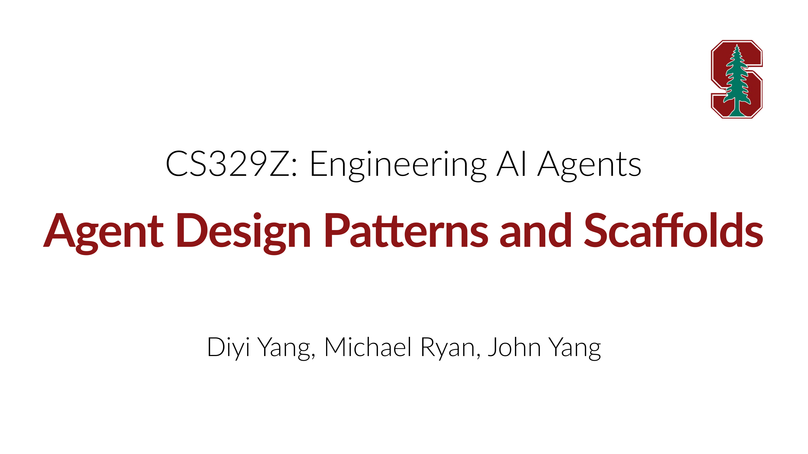
本讲封面：课程全称 CS 329Z: Engineering AI Agents，第六讲主题 Agent Design Patterns and Scaffolds（Agent 设计模式与脚手架），由 Diyi Yang、Michael Ryan、John Yang 授课。
本教程是 Stanford 课程 CS 329Z: Engineering AI Agents 第六讲 《Agent Design Patterns & Scaffolds（Agent 设计模式与脚手架）》的中文讲解。 教程按原讲义顺序逐页呈现：每张幻灯片以图片插入，并配中文讲解。全讲按讲义开头的 Lecture Overview 分为五个部分： Workflows vs Agents（工作流与 agent 的区别）、Workflow Designs（工作流设计模式）、Reasoning Designs（推理/行动设计模式）、 Context Designs（上下文管理设计模式）、Case Study（案例研究 Pi）。 学习目标（Learning Objectives）：定义（Define）工作流与 agent、以及本讲介绍的各种设计模式；比较与对照（Compare and Contrast）不同模式之间的权衡；通过分析（Analyze）真实系统（如 Pi）来理解这些模式如何组合落地。
Announcements, Design Patterns & Lecture Overview（Slide 1–8）

本讲封面：课程全称 CS 329Z: Engineering AI Agents，第六讲主题 Agent Design Patterns and Scaffolds（Agent 设计模式与脚手架），由 Diyi Yang、Michael Ryan、John Yang 授课。
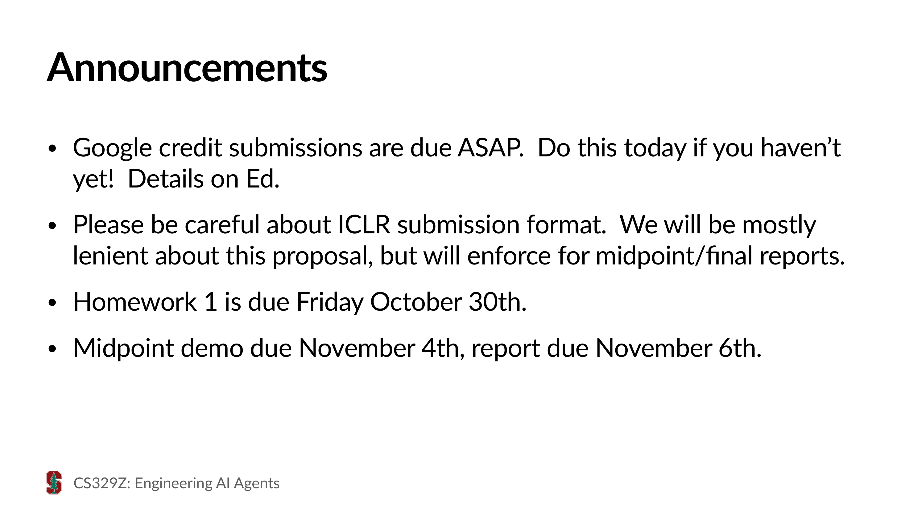
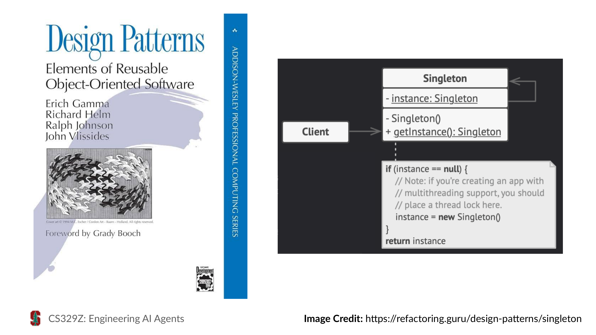
「设计模式」一词源自软件工程经典著作 Design Patterns: Elements of Reusable Object-Oriented Software（GoF，「四人帮」）。 讲义以其中的单例模式（Singleton）为例：保证一个类只有一个实例，并提供全局访问点 （图示来自 refactoring.guru/design-patterns/singleton，推荐作为复习材料）。 本讲的思路正是把这种「可复用的、命名的解决方案」带入 agent 工程。
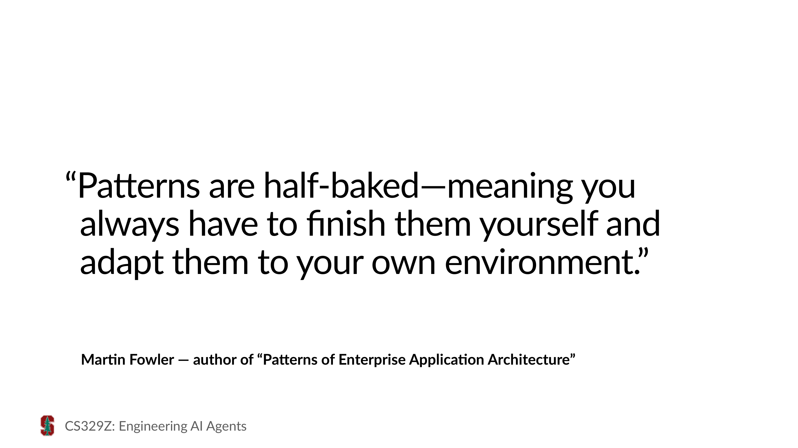
Martin Fowler 的名言："Patterns are half-baked."（模式是半成品。） 意思是：模式不是拿来即用的完整代码，而是描述「何时使用、如何权衡」的思想，每次落地都需要你结合具体场景加以调整。 这一定位贯穿全讲：下面的每个模式都是思考工具，而不是照抄的模板。
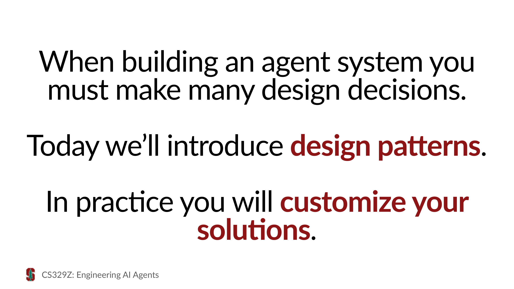
构建 agent 系统时要面对大量设计决策（如控制流交给谁、上下文如何组织等）， 本讲的设计模式就是对这片「定制空间」的地图：认识每个选项，才能按需定制（customize）你的系统。
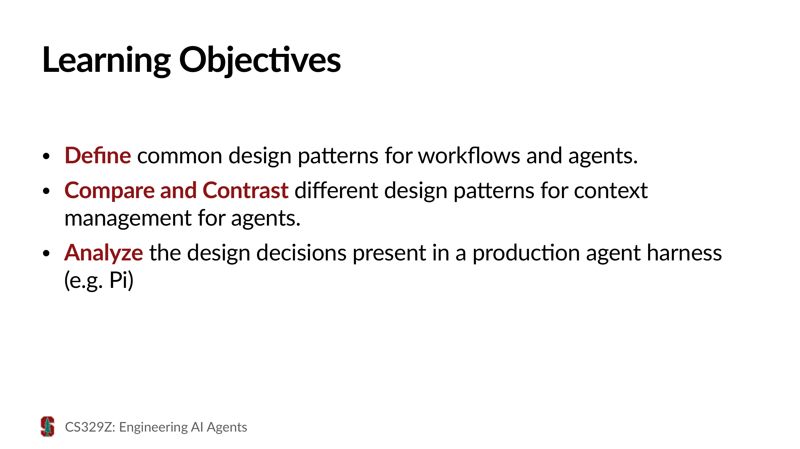
本讲三个层次的学习目标：
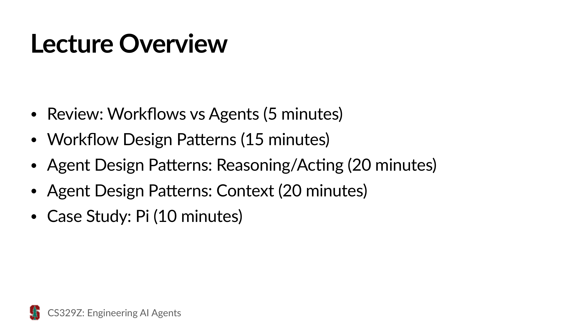
本讲共五个部分：
从模型调用到全自动 agent 的控制流光谱（Slide 8–12）
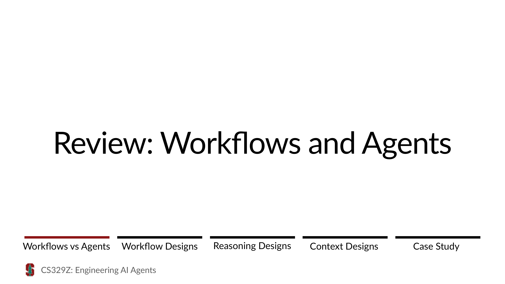
第一部分从一个回顾开始：上一讲我们见过各类框架，这一讲先厘清最基本的概念区分—— 工作流（workflow）与智能体（agent）到底差在哪里。
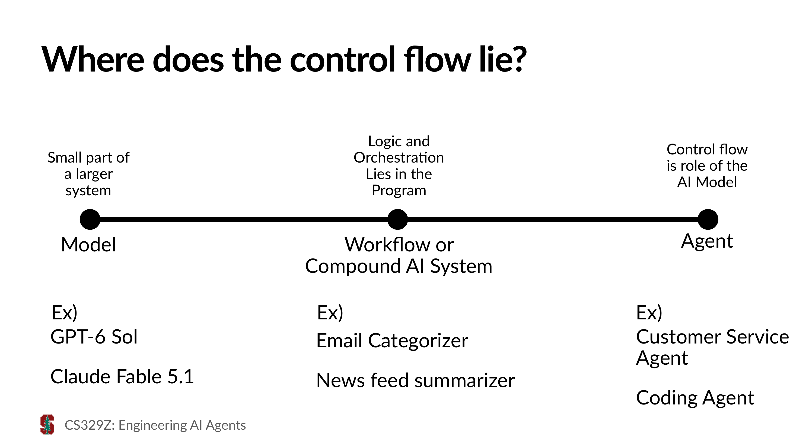
核心区分轴是控制流（control flow）归谁：
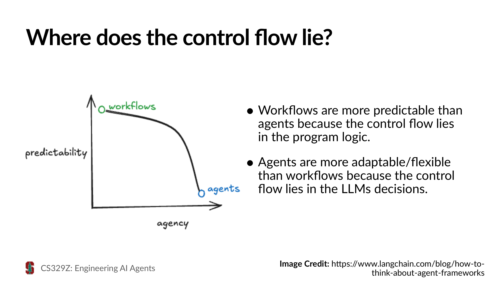
这张谱系图（来自 LangChain 博客 How to think about agent frameworks）把系统按 可预测性（predictability）与自主性（agency）两个维度排列： 从固定 chain → workflow/compound AI → agent，越往右自主性越强、可预测性越低。 选择在哪一档构建，取决于任务对可靠性的要求与任务开放程度之间的权衡。
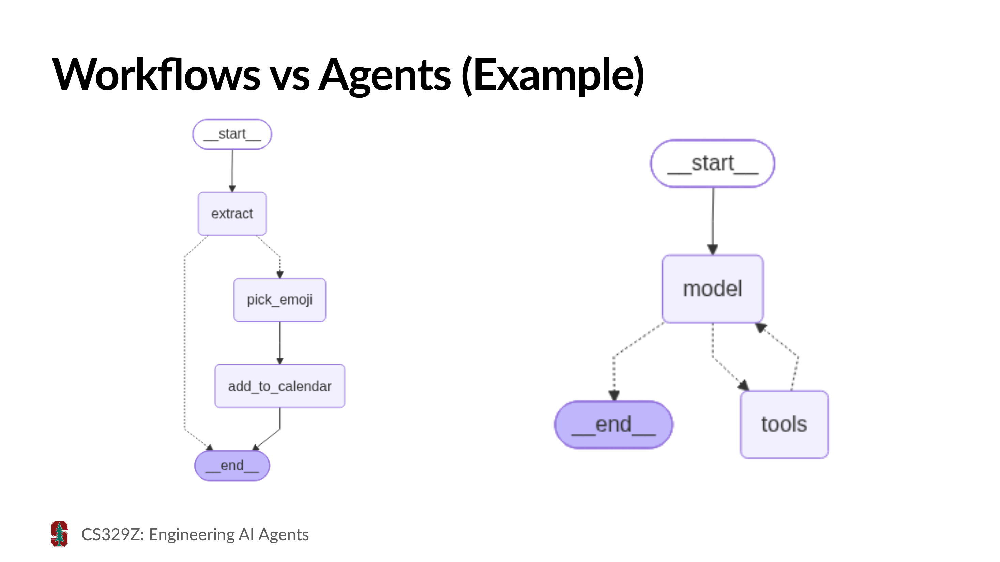
直观对比：工作流的图在运行前就已确定（节点、边都由代码写死）； agent 的图在运行时由 LLM 逐步「走」出来——每一步做什么取决于模型的决定。 这也解释了为什么 agent 更灵活但更难调试与保证。
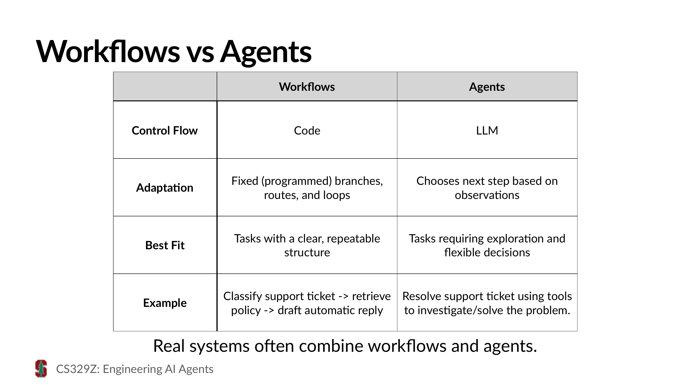
| Workflow（工作流） | Agent（智能体） | |
|---|---|---|
| 控制流 | 由开发者用代码预先定义 | 由 LLM 在运行时动态决定 |
| 优点 | 可预测、可复现、成本低、易调试 | 灵活，能应对开放性任务 |
| 缺点 | 僵化，难以处理未预见的情况 | 成本高、延迟高、更难保证正确性 |
Anthropic 五大工作流模式 + 模式组合案例（STORM、Archon）（Slide 13–30）
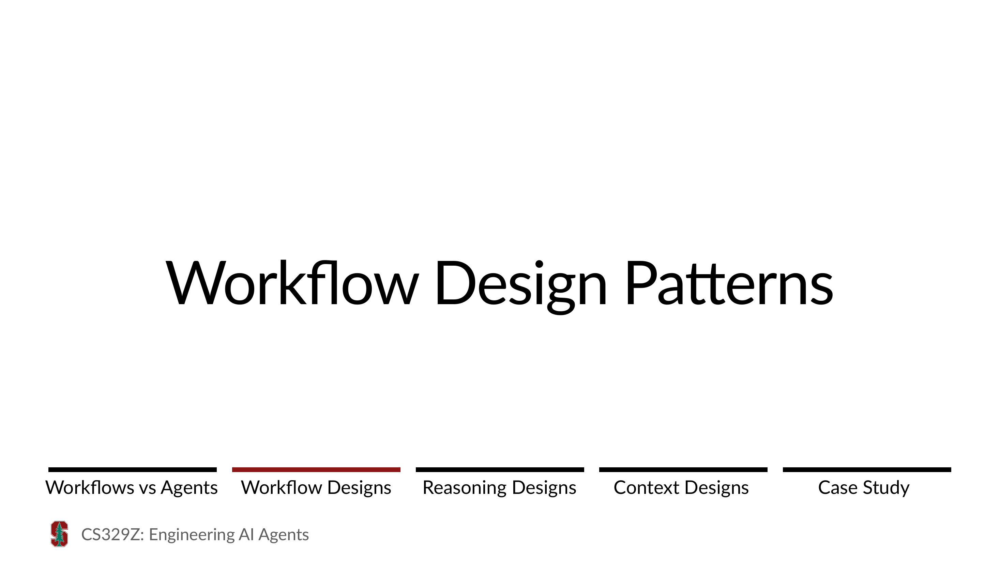
进入第二部分：工作流设计模式。这一部分主要基于 Anthropic 的工程博客 Building Effective Agents（anthropic.com/engineering/building-effective-agents）提出的分类。
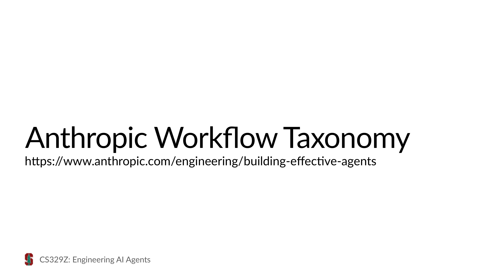
Anthropic 在博客中将「增强 LLM 的系统」分为两大类： workflows（通过预定义代码路径编排 LLM 与工具）与 agents（LLM 自主动态决定过程）。 这与本讲第一部分的概念区分一致，也是下面五种工作流模式的出处。
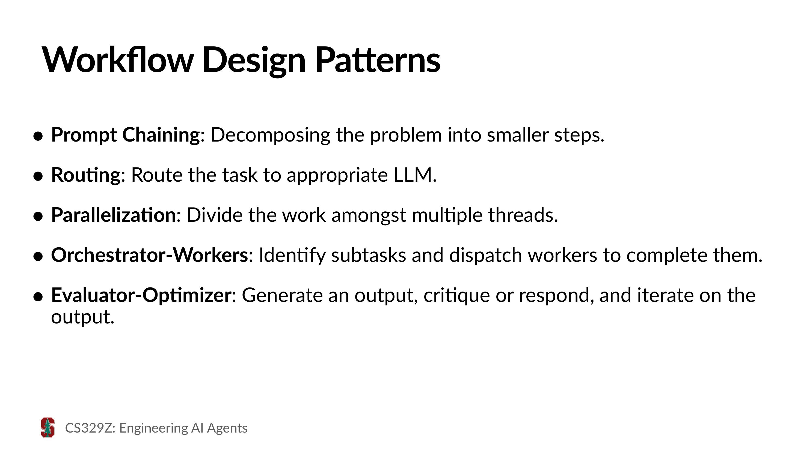
五种经典工作流模式：
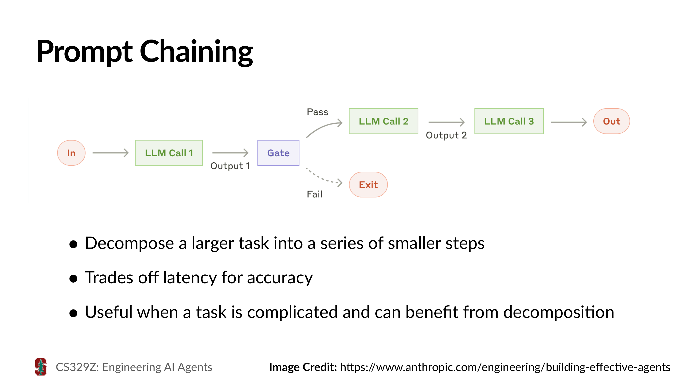
提示链把一个任务分解为一系列固定的串行子任务，每个子任务一次 LLM 调用； 可以在中间插入门控（Gate）检查上一步质量，不通过（Fail）则终止或重试。 适用场景：任务能干净地拆成固定子步骤，用延迟换准确率。典型例子：先生成营销文案 → 再翻译成其他语言。
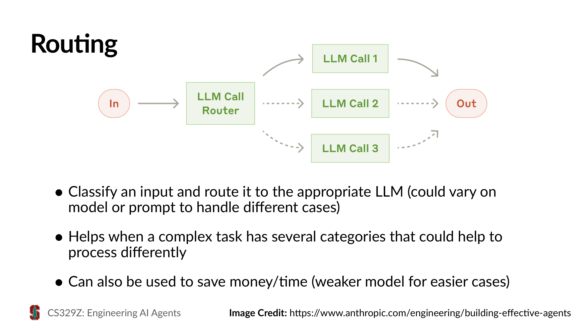
路由先用一次 LLM 调用对输入分类（classify），再把它导向专门化的分支。 好处：每条分支可以针对性优化（各自的提示词、各自的处理逻辑），实现关注点分离（separation of concerns）。 适用场景：不同类型的输入差异大、用单一提示词难以兼顾，例如把「退款请求 / 技术支持 / 一般咨询」分流到不同流程。
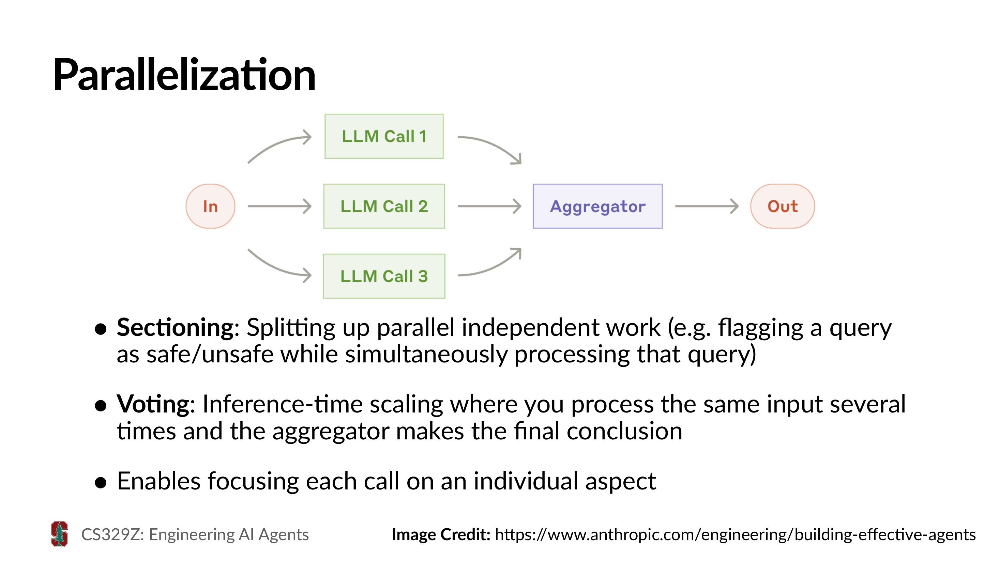
并行化让多个 LLM 调用同时工作，再聚合结果。两种形式：
适用场景：子任务彼此独立（可并行提速），或需要多视角/多数表决来提升可靠性。
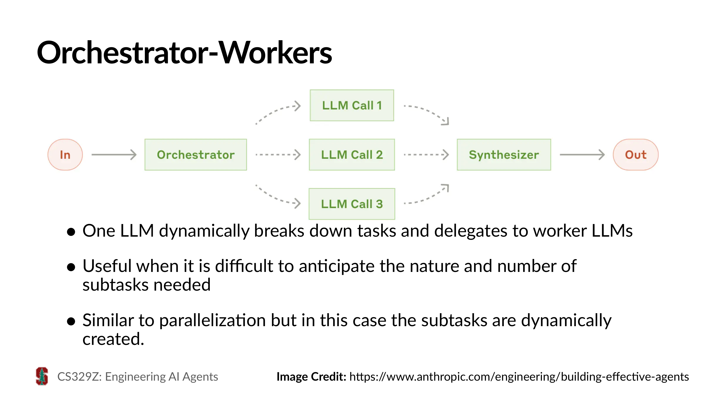
编排者-执行者：一个中心 LLM（orchestrator）动态把任务拆解成子任务，分派给多个 worker LLM 执行，最后把结果综合起来。 与并行化的区别：子任务不是预先定义的，而是由编排者按输入实时决定。 适用场景：子任务数量与内容无法预知（如对多个文件做内容各不相同的修改）。
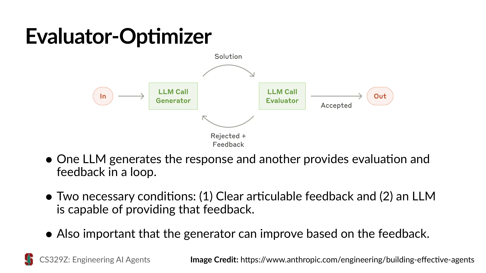
评估者-优化者：一个 LLM 生成结果，另一个 LLM 充当「评委」给出反馈，循环迭代直至满意。 两个适用条件：
类比人类写作：找一位善于提意见的编辑反复打磨译文/文章。
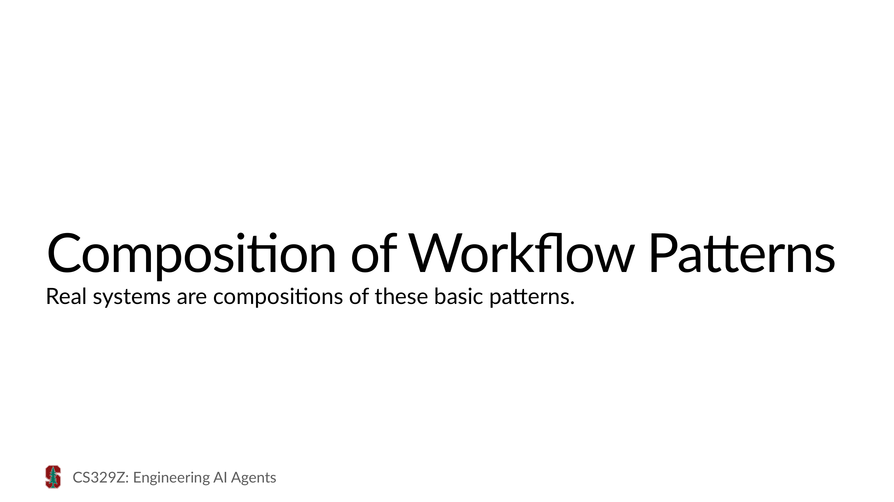
这些模式不是互斥的「菜单选项」，而是可以像积木一样自由组合。 接下来用两个真实系统——STORM 与 Archon——看看组合是怎么发生的。
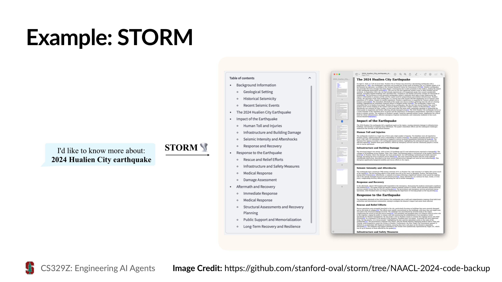
STORM（Stanford 中出品的开源系统）能从零开始、依靠网络检索生成类似 Wikipedia 的结构化长文报告。 它的流水线是对前面五种模式的一次组合演练，是观察「模式组合」的好样本（源码：github.com/stanford-oval/storm）。
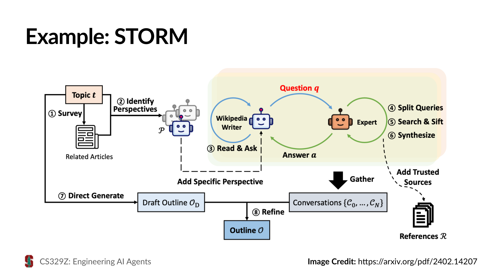
STORM 的完整流程（论文 arXiv:2402.14207）：
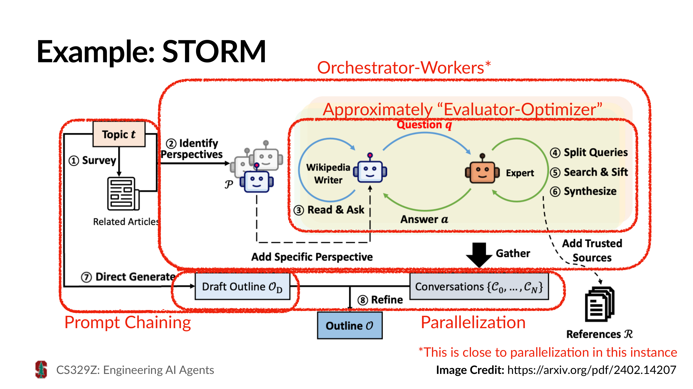
把 STORM 的每个环节标注到刚才的模式上：整体是提示链骨架；「Read & Ask」多视角循环接近 评估者-优化者式的迭代；「Split Queries / Search & Sift」是并行化 + 编排者式的任务拆分。 说明：真实系统没有照搬单一模式，而是按需组合。
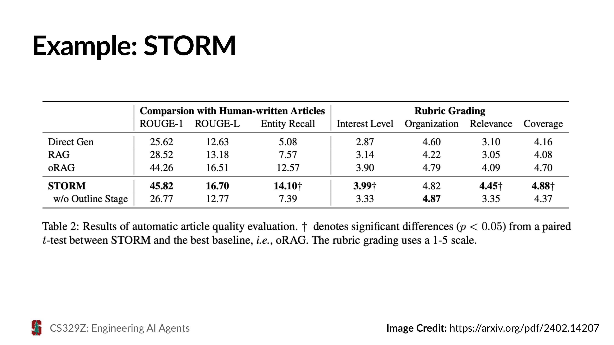
论文结果（Table 2，以 ROUGE 等指标与文章质量评估对比）：STORM 的自动流水线在 ROUGE-1 上取得 45.82，优于各消融/基线配置——多视角提问与结构化流水线确实带来了更高质量的长文。
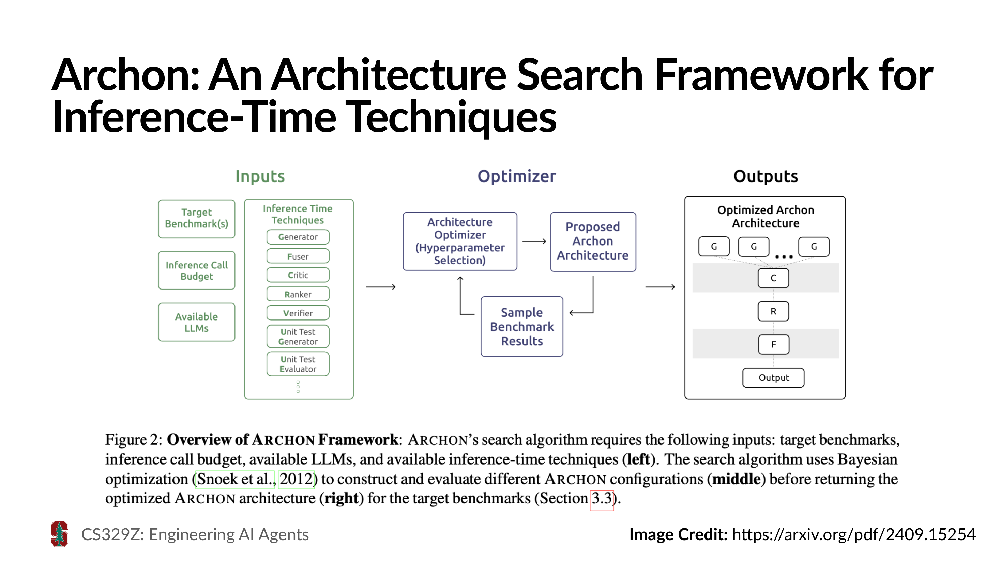
Archon（arXiv:2409.15254）是另一个模式组合案例：一个自动搜索并组合「推理技术模块」来构建更强 agent 的框架。 其技术模块包括：Generator（生成器）、Fuser（融合器）、Critic（评论家）、Ranker（排序器）、Verifier（验证器）、 Unit Test Generator（单测生成器）、Evaluator（评估器）； 并用贝叶斯优化（per Snoek et al. 2012）在模块组合空间里做架构搜索。
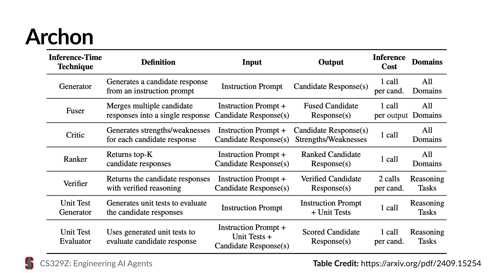
表中逐一列出各模块：Generator 负责产出候选推理/答案；Critic 对输出挑毛病； Ranker 对候选排序；Fuser 把多个候选融合；Verifier 用模型或单测验证正确性；Evaluator 做最终评估。 Archon 的要点是：这些「模式级组件」被做成了可插拔的模块，由搜索算法自动决定用哪些、怎么接。
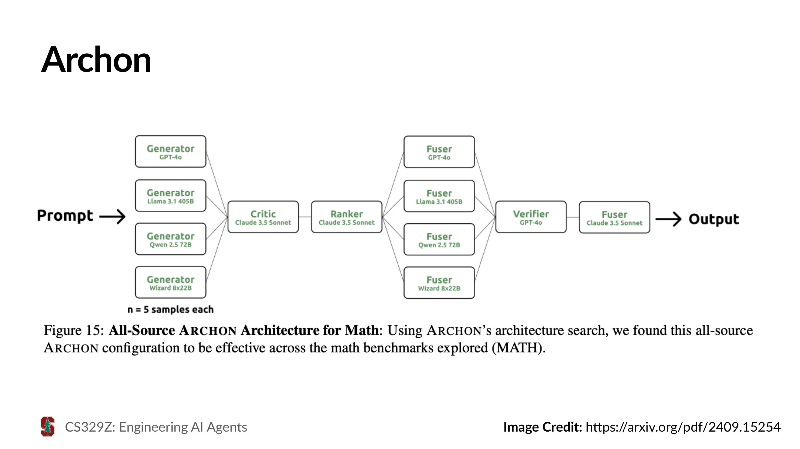
数学推理任务上搜索出的一个架构：4 个 Generator 并行产出候选 → Critic（Claude 3.5 Sonnet）评论 → Ranker 排序 → 4 个 Fuser 融合 → Verifier（GPT-4o）验证 → 最终 Fuser 出答案。 可以清楚看到 Parallelization + Evaluator-Optimizer（Critic/Verifier）+ 综合 的组合。
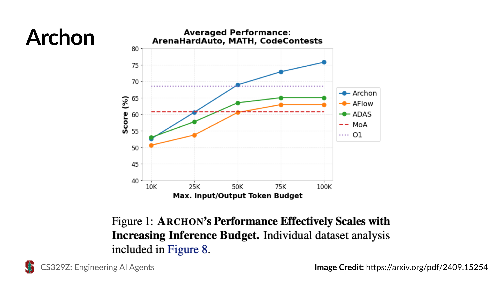
Archon 的搜索式组装效果显著：性能从起点的 52.5 一路提升到 76， 超过 AFlow、ADAS、MoA 等自动 agent 设计基线，逼近 O1 的水平—— 说明「模式组合」这件事本身也可以被系统化、自动化。
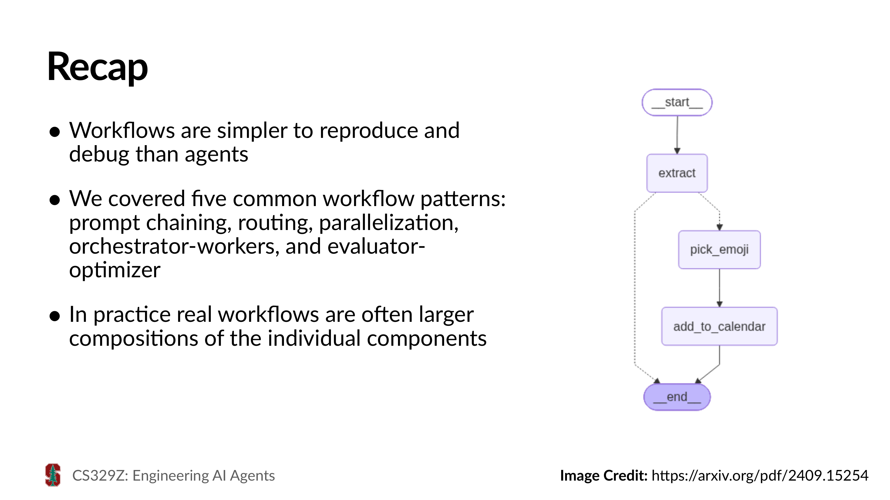
ReAct / Reflexion / CRITIC / CodeAct / ReWOO / LLMCompiler（Slide 31–54）
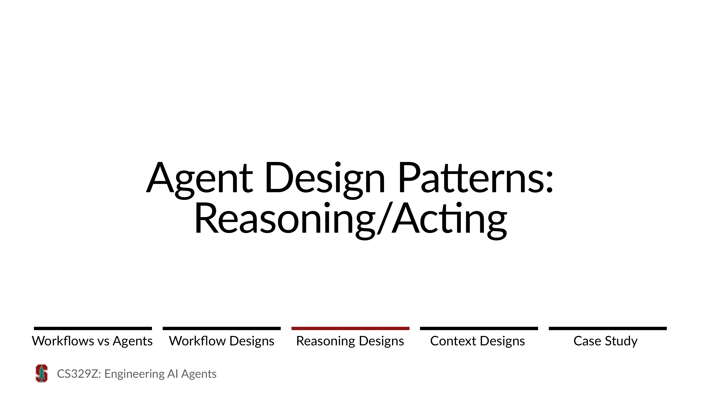
进入第三部分：推理与行动（Reasoning & Acting）的设计模式。 当控制流交给 LLM（agent），就要回答：模型如何思考、如何行动、行动结果如何回流。
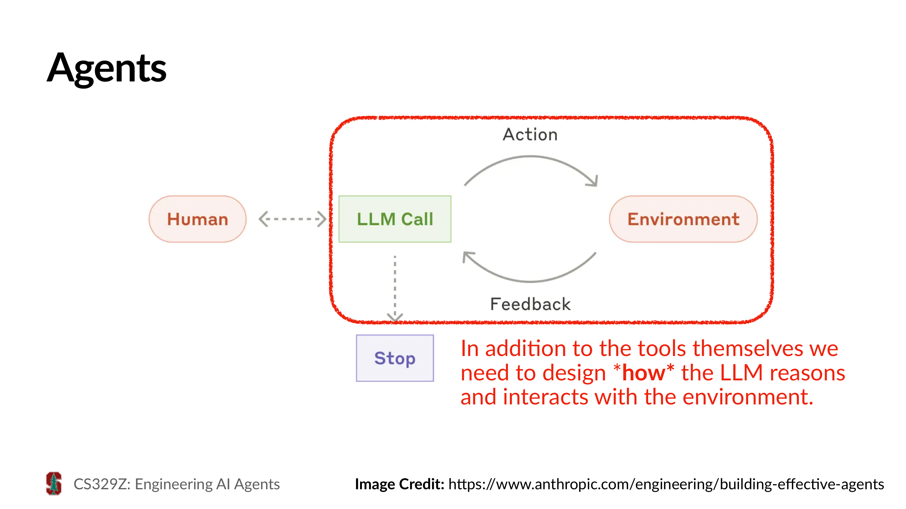
Agent 的骨架是一个循环（图源 Anthropic）：人类给出任务 → LLM 调用 → （调用工具作用于）环境 → 观察结果回到 LLM → ……直到满足停止条件（Stop）。 本节介绍的各种模式，都是在这个骨架上改进「推理」与「行动」的某个侧面。
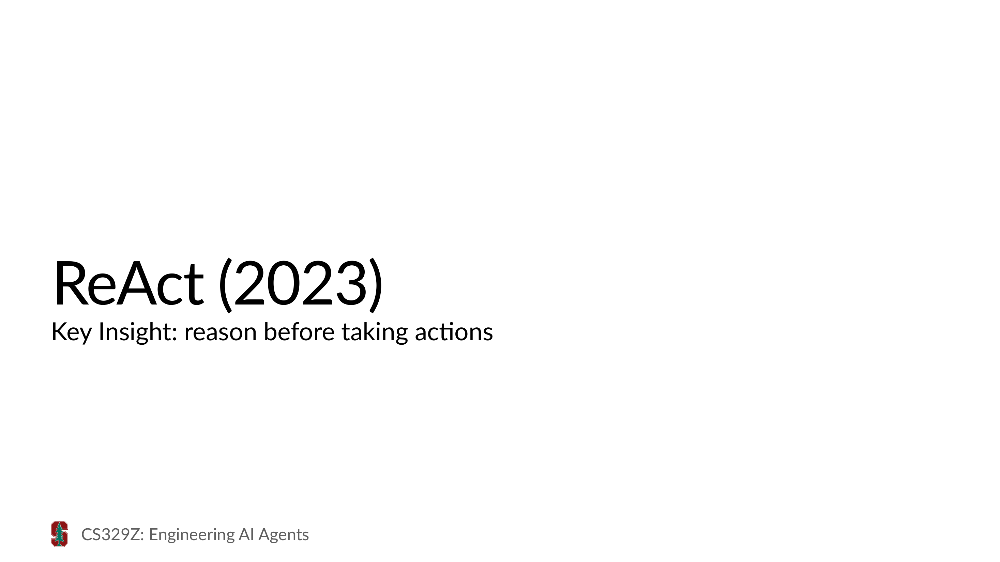
ReAct（2023）是 agent 领域最有影响力的模式：在每次行动（Act）之前先生成推理（Reason/Thought）， 把「想」和「做」交替写出。推理轨迹帮助模型分解任务、跟踪进度、决定下一步动作。
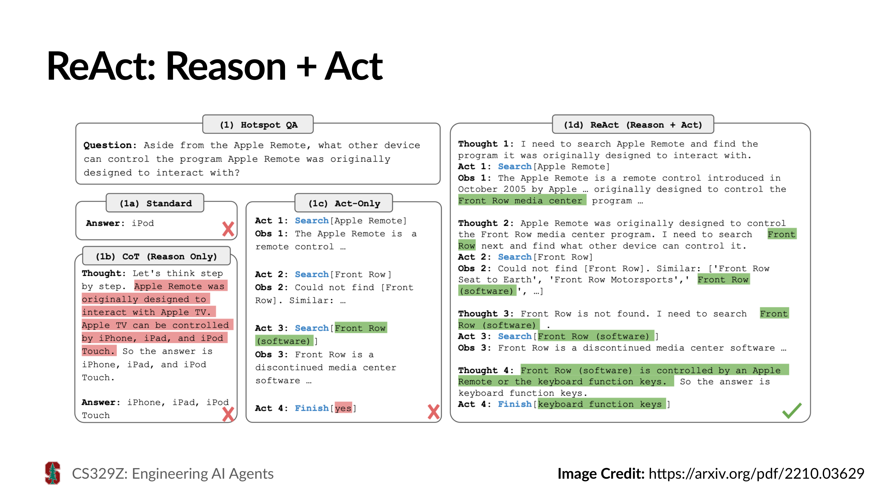
论文（arXiv:2210.03629）里的经典四格对比，任务是从「苹果遥控器」追到其发明国家和发布日期：
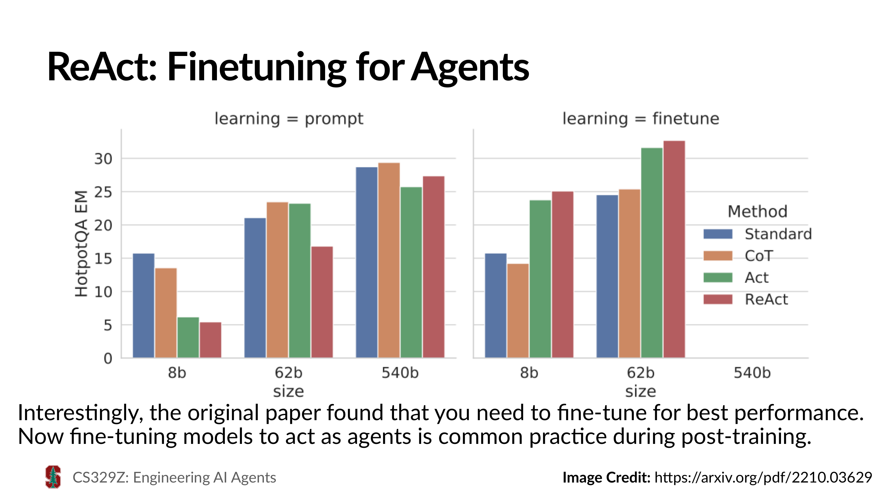
论文还展示了用推理轨迹微调的价值：随着微调数据量增加，ReAct 模式的成功率持续上升—— 「推理+行动」的格式是可以被训练内化的能力。
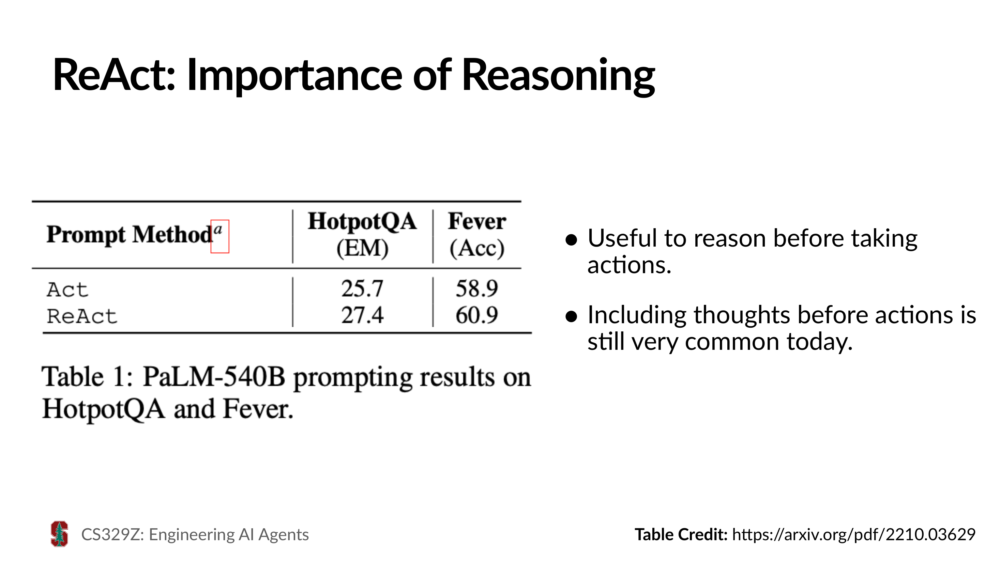
定量结果（Table 1，PaLM-540B）：
| 方法 | HotpotQA（EM） | Fever（Acc） |
|---|---|---|
| Act（仅行动） | 25.7 | 58.9 |
| ReAct（推理+行动） | 27.4 | 60.9 |
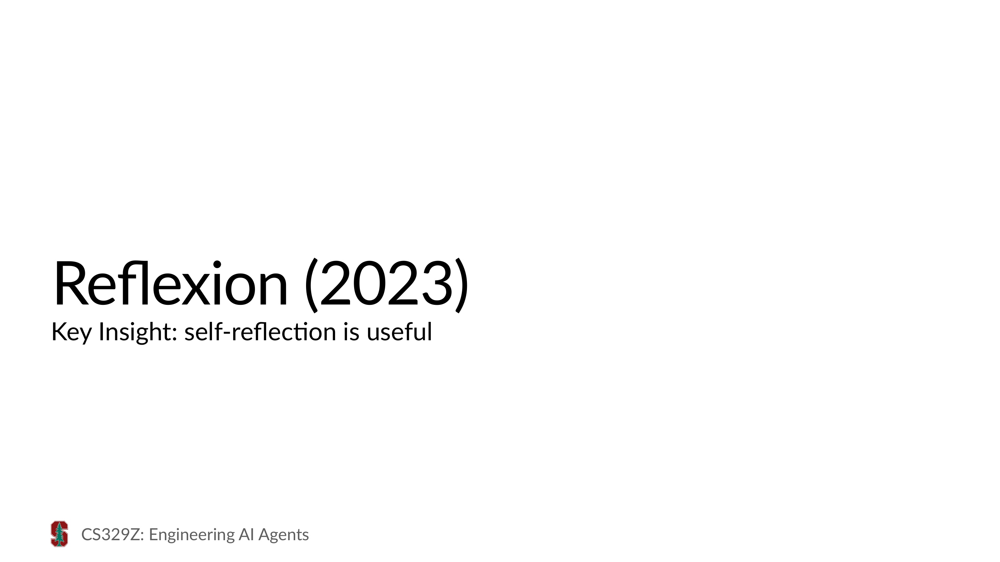
Reflexion（2023）的核心洞见：失败之后，用自然语言对自己做一次「反思」，比直接重试更有效。 agent 把反思结果存入记忆，下一次尝试时带上，从而避免重复犯错。
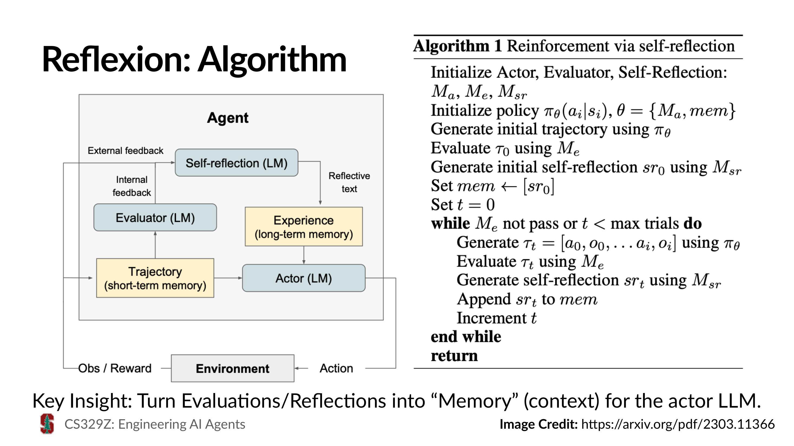
Reflexion 的算法（arXiv:2303.11366）由三个角色构成：
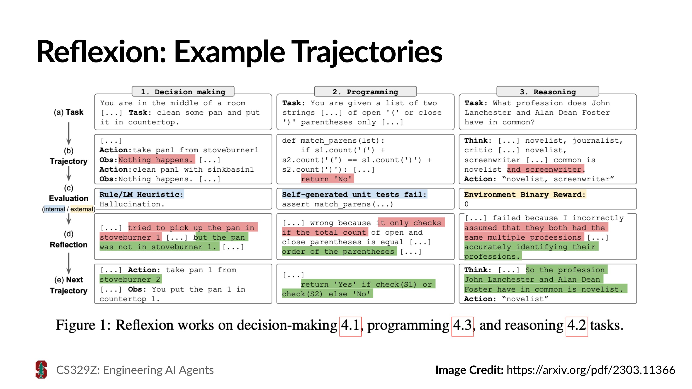
示例展示了完整闭环：第一轮尝试失败 → Self-Reflection 写下「我上次错在哪、下次该注意什么」→ 第二轮的 Actor 带着这条反思行动并成功。反思以文本记忆而非参数更新的方式实现「学习」。
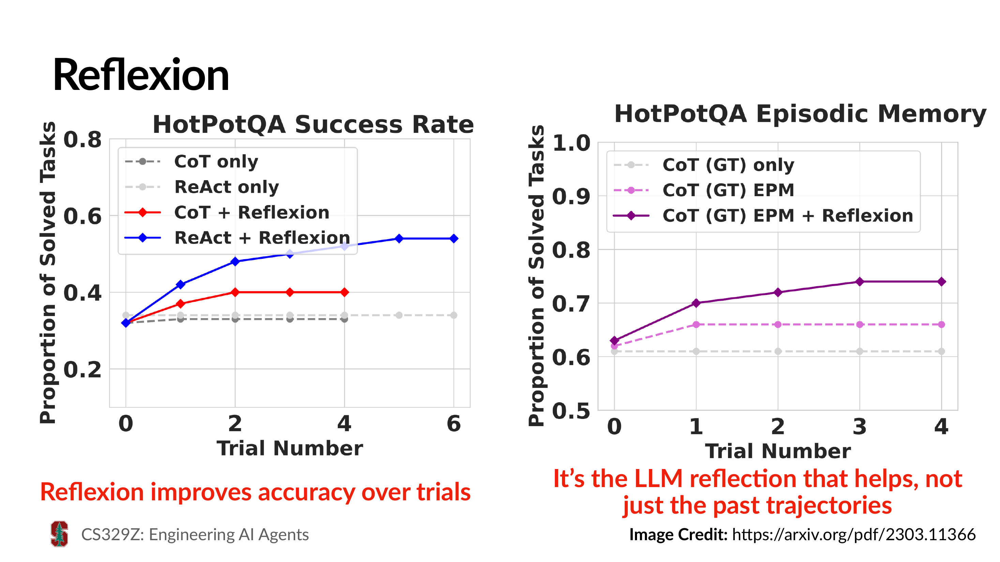
效果：ReAct（约 0.3）叠加 Reflexion 后在 HotpotQA 上提升至 0.54； 消融实验（EPM）显示逐轮累积的反思记忆是关键——去掉后性能明显回落。
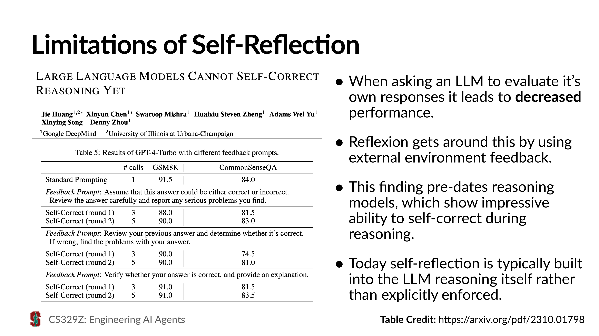
重要提醒：无外部信号的纯自我纠错（self-correction）可能有害—— 论文 LLMs Cannot Self-Correct Reasoning Yet（arXiv:2310.01798）显示 GPT-4-Turbo 在 GSM8K 上 经过自我纠错轮次后，从 91.5 反而下降。Reflexion 之所以有效，是因为它依赖外部环境反馈而非凭空自省； 如今这能力已内化为推理模型（reasoning models）中的内置反思。
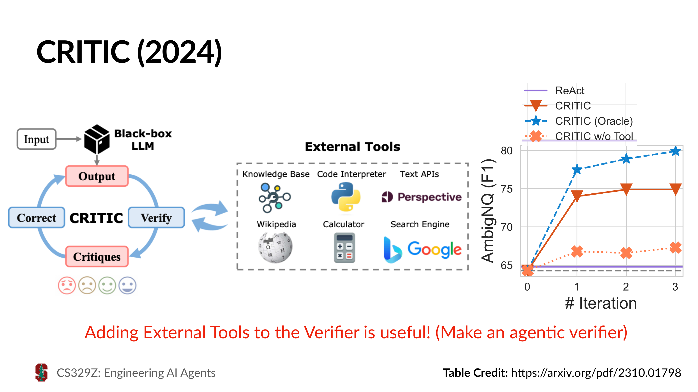
CRITIC（2024）修正了自我反思的问题：用外部工具验证自己的输出—— Wikipedia 检索、计算器 / 代码解释器、搜索引擎等。流程：输出 → 工具验证 → 批评 → 修正。 AmbigNQ 上的 F1：ReAct 约 64.5 → CRITIC 约 75（CRITIC Oracle 约 80；去掉工具降到约 67）。
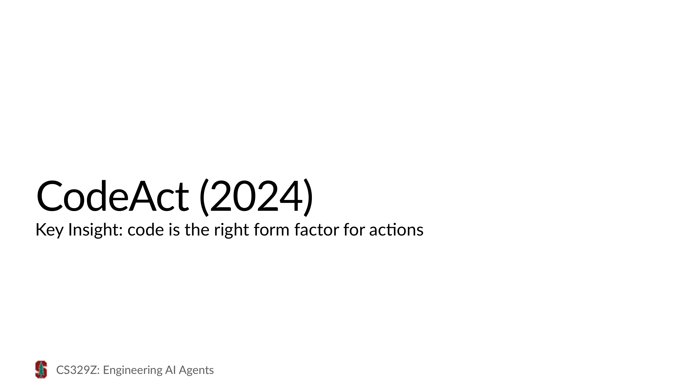
CodeAct（2024）提出：让 agent 用可执行代码（如 Python）作为「动作」，而不是一个个独立的 JSON 工具调用。 代码作为动作形式（form factor）天然具备循环、变量复用、组合等表达力。
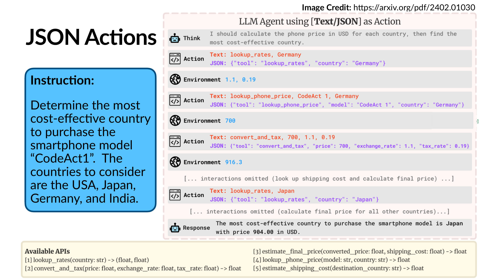
例：要比较多个国家的智能手机价格，JSON 工具调用方式下每个动作只能调用一次工具—— 查 6 个国家就要 6 轮往返，动作之间还无法直接复用中间结果（arXiv:2402.01030）。
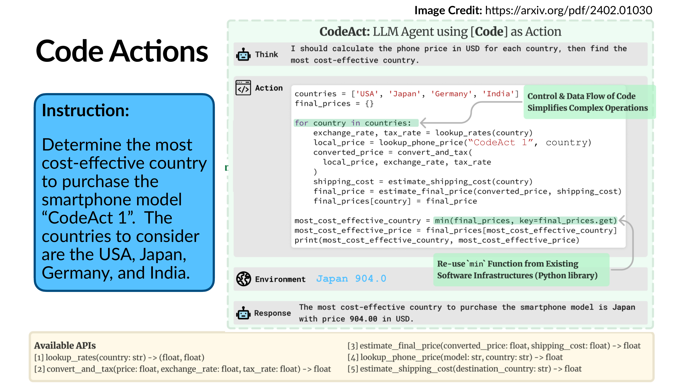
同样任务用代码动作：一个 for 循环遍历所有国家，把查询结果存进变量，直接用 min() 求最低价——
一轮完成多步操作，且能复用已有函数库。这就是「代码作为动作」的表达力优势。
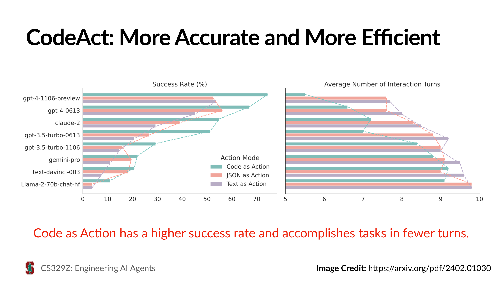
实验结论：在 8 个模型上一致地，代码动作相比 JSON 动作取得更高的成功率、更少的交互轮数。 这一思路已被主流 agent 框架吸收（如用代码解释器/脚本作为统一动作接口）。
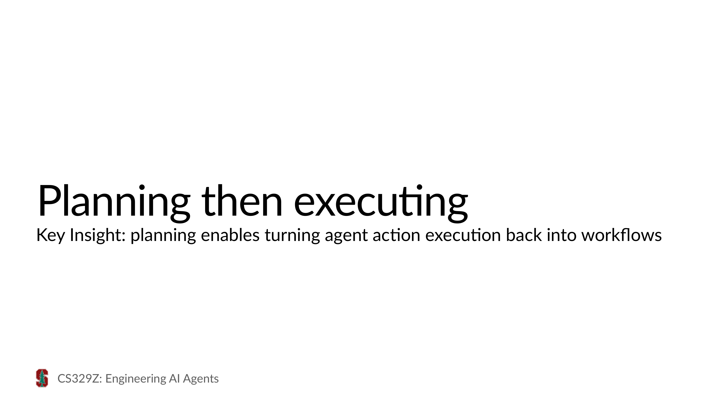
另一族思路：先规划后执行（Planning then executing）。 先让 LLM 一次性产出完整计划，再（可能并行地）执行——这实际上把 agent 的执行重新变回了工作流， 用前期的规划换取执行期的可控性与并行性。代表工作：ReWOO、LLMCompiler。
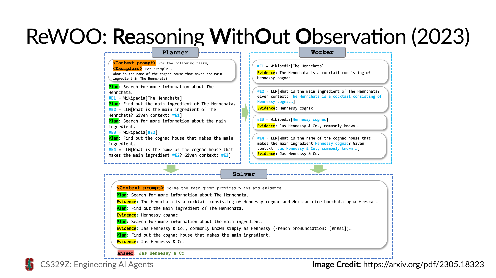
ReWOO（Reasoning WithOut Observation，2023；arXiv:2305.18323）三阶段：
#E1…#E4 占位符引用中间结果；名字的含义：推理（计划）时看不到观测——规划与执行解耦。
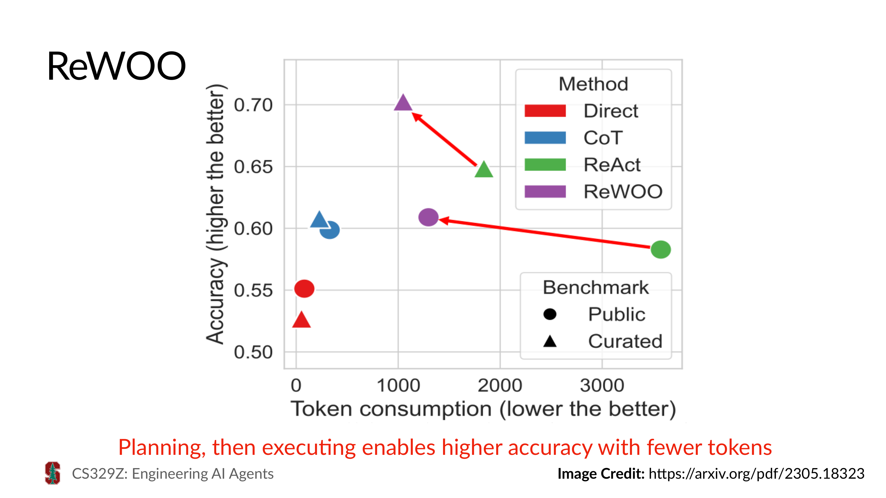
效果：ReWOO 以远少于 ReAct 的 token 用量取得更高准确率—— 因为每次 LLM 调用不必把历史观测全部塞回上下文（ReAct 每轮都要重放全部历史，token 随轮数膨胀）。
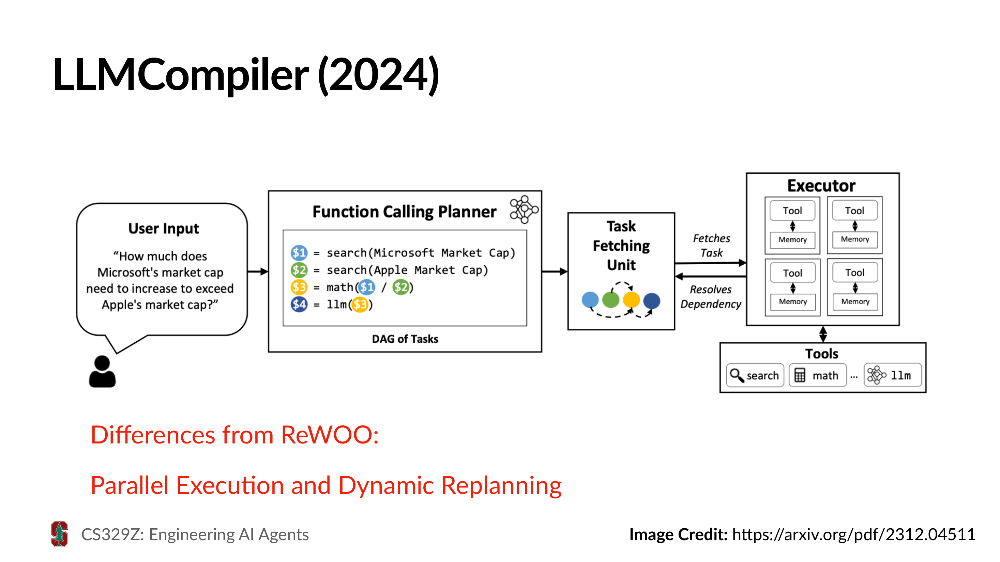
LLMCompiler（2024；arXiv:2312.04511），类比经典编译器： Planner 产出任务 DAG（有向无环图）→ Task Fetching Unit 在依赖满足后立刻取任务 → Executor 并行执行任务函数。与 ReWOO 的区别：支持并行执行 + 动态重规划（replanning）。
示例中，多个互不依赖的工具调用被并行执行，只按 DAG 中的依赖关系等待， 端到端获得约 1.8× 的延迟加速。
论文结果（GPT 模型）：
| 基准 | 准确率 | 延迟/加速 |
|---|---|---|
| HotpotQA | 62.00% | 3.95s（1.80×） |
| Movie Recommendation | 77.13% | 3.74× |
| ParallelQA | 89.38% | 2.15× |
| Game of 24（vs ToT） | 75.33% | 2.89× |

第三部分的收尾小结。
上下文工程的原理与五大模式（Slide 55–75）
进入第四部分：上下文管理（Context Management）——agent 能力上限的隐形约束往往就是上下文。
换个视角看 agent：LLM Call 是不变的内核，外面套着一个 Context Manager（上下文管理器），决定每一次调用到底把什么放进上下文窗口。 agent 的「智能」很大程度由这个管理器决定。
术语演进：提示工程针对单次调用怎么问； 上下文工程（Context Engineering）面向多轮 agent—— 在正确的时间把正确的信息与工具放进上下文（图源 Anthropic 博客 Effective context engineering for AI agents）。
经典的大海捞针（Needle In A Haystack）实验（Claude-2.1，200K 上下文）热力图显示： 文档越长、关键信息埋得越深，检索准确率越低。上下文窗口大 ≠ 全都有效—— 这正是需要主动管理上下文的实证理由。
两条指导原则：
接下来逐个介绍五种上下文管理的设计模式。
OpenHands（arXiv:2407.16741v3）的核心设计是事件流（Event Stream）架构： 用户界面、agent 与运行时（Docker 沙箱、IPython 服务器、Bash Shell、Playwright Chromium 浏览器）之间的一切交互 都以 Action–Observation 事件的形式记录在事件流中，日志不可变、只追加（append-only）。
关键机制：LLM 的输入不是被保存的状态，而是每次从事件日志重建： 取事件列表 → 过滤出可转换为 LLM 事件的部分（LLMConvertibleEvent）→ 按响应 id 分组 → 转成 messages。 好处：历史被原样完整保存（一切如其所发生），且便于为外部观察者挂接 hooks、做回放与审计。
MemGPT（arXiv:2310.08560）用操作系统的思路管理上下文：内存压力大时把内容写入外部记忆，
如 working_context.append("Birthday is February 7")、("Boyfriend named James")；
之后需要时再 recall_storage.search("six flags") 检索回来。
Compaction：当历史变长，用 LLM 把先前的推理、动作、观测总结为摘要 （如把 T1、T2 压成 Summary 1），保留关键信息、丢掉冗余细节，从而用更少 token 继续对话。 压缩本身也可以做成 agentic 的（由模型决定留什么）。
为什么要遮蔽观测？看这组数据（arXiv:2508.21433v3）：原始 agent 的上下文 token 中， 工具输出的观测（Observation）占了 83.9%，推理只占 9.6%，动作 6.5%。 上下文大头是又长又旧的工具输出——它们是裁剪的最佳目标。
Observation Masking 的做法出奇简单：把旧轮次的长观测直接截断/隐藏（Mask 1、Mask 2）， 不必耗费 LLM 调用去做摘要。对观测特别长的编码类 agent（代码文件、命令输出）尤其有效。
「解题率 vs 单实例成本」散点：Observation Masking 与 LLM-Summary 两种裁剪方式都比 Raw Agent 更便宜； 在 Gemini 2.5 Flash Thinking 上遮蔽效果最好，而 Qwen3-Coder 上 Raw 反而占优—— 说明裁剪策略要按模型与任务实测调整，不是无脑套用。
Context Isolation：把任务拆给多个子 agent， 各自有独立的上下文窗口并行工作，只把各自需要的子任务与最终的简短结果带回主 agent—— 中间的海量过程细节不进入主上下文，同时收获并行加速。
隔离的另一种形态是渐进式披露（Progressive Disclosure）（如 Anthropic 的 Agent Skills）：
SKILL.md 的 YAML frontmatter 只带名称与一句描述（始终可见），正文与 ./reference.md、./forms.md
等细节按需加载。
这些策略并不互斥：可以先卸载（offload）再压缩（compact）；可以事件日志 + 截断观测并用。 真实系统往往同时组合多种甚至全部上下文管理策略。
第四部分的收尾小结。
用 LangChain 的分类学收束本节（对操作上下文的四种动作）：
讲义特意在这张分类图上做了标注：长期记忆 + 检索记忆正是本周三「记忆（Memory）」课的主题； 跨多 agent 的分区则是下周一「多 agent」课的主题——本讲是它们的铺垫。
Case Study: Pi — A Minimalist Agent Harness（Slide 76–83）
最后一部分是案例研究：Pi——用本讲的所有模式去解剖一个真实的 agent 脚手架。
Pi 是一个极简主义的 agent harness（脚手架）——刻意把自身做得非常小， 把扩展空间留给用户。
Pi 的口号："Pi is a minimal agent harness. Adapt Pi to your workflows, not the other way around." （Pi 是极简 harness——让 Pi 适配你的工作流，而不是反过来。） 它只提供极基础的运行框架，社区在其上构建了大量扩展；刻意「不做」的清单包括： 无子 agent、无权限检查、无 Plan Mode、无 agent 待办清单、无后台 bash。
Pi 的工具集：read、bash、powershell、edit、write、grep、find、ls，各自用途不同； 但默认只启用 read、bash、edit、write 四个——其余（grep、find、ls 等）都是 bash 的子集， 完全可以用 bash 完成。这是对「工具膨胀（tool bloat）」的反动：少而精，最小化工具选择对模型注意力的干扰。
Pi 的主循环是标准的 ReAct 风格：先推理，再发出 JSON 格式的工具调用。 特色在于上下文被组织成树（tree）结构——可以从任意先前节点分叉，回去继续另一条对话线程。
Pi 用到了本讲的三种上下文模式：
① 事件日志 → LLM 输入的转换（同 OpenHands 思路）；
② 通过 Skill 文件做渐进式披露；
③ Compaction（压缩）——从压缩点（cmp / firstKeptEntryId）起保留消息，更早历史折叠为 summary。
模型每次看到的形如 [system|summary|usr|ass|tool|tool|ass|tool]。
极简的代价是安全：官方警告 Pi 以与宿主进程相同的权限运行，且没有任何请求权限的弹窗—— 相当于一直处于「全自动模式、零防护」。
Summary（Slide 84–86）
全讲总结部分。
本讲完成：
结束语："Remember to come to class Wednesday where we will talk about Memory!"—— 周三课堂见，主题是记忆（Memory）（呼应 Slide 74 的预告：长期记忆与检索）。
本讲涉及的论文、博客与工具